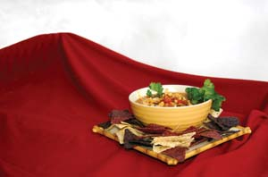
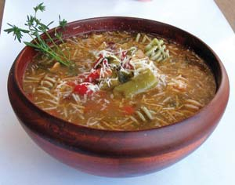

Soup season is right around the corner, and if you have a garden, the best ingredients are just a few steps away. Fresh produce from your garden or the farmers market is the key to flavorful homemade soups. Whether it’s a chilled berry purée, a light brothy soup or a thick, creamy winter warmer, once you’ve tasted the rich and comforting results of your labors, there’s no going back to soup in a can. Plus, homemade goodness doesn’t have to mean spending all day in the kitchen. With a good stock ready to go, basic kitchen staples and fresh produce, you can put a delicious soup on the table in about half an hour. And most soups freeze or can beautifully, so you can put a scrumptious soup together one day, and enjoy it for many meals to come. You may have heard that soup always tastes better the next day - it’s true! Homemade soups cost a lot less, too - especially if you garden. If not, look for great end-of-season deals at the farmers market, and stock up!
Soup stock is the often unnoticed foundation that makes a soup full-bodied rather than bland and watery. It’s a flavorful liquid in which vegetables, meat and/or fish are cooked slowly, in order to extract their full essence. Making soup stock is a perfect companion to gardening. Simply toss your less-than-perfect culls (complete with trimmings, leaves and peels) and those too-small-to-peel garlic cloves and potatoes, plus a few herbs and seasonings into a heavy pot filled with water. (I find that starting with cold or room temperature water helps the veggies exude even more flavor.) Then just let it simmer while you go about your day.
You can keep plenty of stock frozen and ready to use. If you have a little extra room in the freezer, you also can store veggie trimmings that would have ended up in the disposal or compost pile, until there’s enough for great stock.
Soup stock can be based on vegetables, fowl, beef, fish or even miso. Experiment with different ingredients to suit your tastes and use what’s in season and on hand. You don’t need to peel any veggies - the skins add nutrients and flavor. Just rinse the dirt off. With chicken, skin is optional; it provides more flavor, but also more fat. Simmered bones add calcium and other nutrients, but you can leave them out if you prefer.
After letting it simmer for a couple of hours, strain and discard the solids, then allow the stock to cool. Don’t let it sit around any longer than the time it takes to reach room temperature. If you don’t intend to make soup immediately, freeze or refrigerate the stock for later use.
Soup stocks can be enriched or thickened by adding wine, cream, puréed vegetables, miso, or starches such as wheat or oat flour. If you’re inventing a soup with whatever is on hand, here’s a great way to begin: Sauté diced onions, celery, carrots, garlic and herbs in just enough oil or butter to coat the bottom of your pot. Brown the vegetables slightly, then deglaze the browned bottom of the pot with stock or dry white wine.
Once the pan is deglazed, add half your stock and the ingredients that will take the longest time to cook. Bring to a boil, reduce heat and simmer until the vegetables are almost done. Next, add enough stock to create the desired volume. Return to a boil and add the remaining ingredients. Remove from heat. Adjust seasonings and allow the soup to sit for as long as possible before serving, to let the flavors meld.
To freeze soup, allow about an inch of space in the container for expansion. To can soup, pressure can according to recommendations for the least acidic ingredients, typically 30 to 50 minutes at 10 pounds pressure. (For more about canning, see Learn to Can for Homegrown Flavor, August/September 2005.)
To add even more depth to your homemade soups, try some of the following tried-and-true techniques for boosting flavor:
•Add grated or puréed potato, squash, zucchini, onion or garlic early in the process; they’ll eventually dissolve.
•Pop in an herb-infused ice cube. (Blend fresh herbs with oil and a little water, and keep frozen in ice cube trays.)
•Add a hefty dollop of tomato paste, honey, molasses, nut butter, pesto, miso or nutritional yeast (the base of many bouillon cubes).
•Spice up soups based on tomatoes, beans or cream with dashes of nutmeg, cinnamon, cumin or chili powder.
•Add complexity with red or white wine, cognac, brandy, sherry, Worcestershire sauce, hot sauce, lemon juice or vinegar.
Now it’s time to try one of the following recipes. Or take “stock” of what’s in your kitchen and garden, find the best market deals, and experiment away!
8 cups water, cold or room temperature
1 to 3 large onions, unpeeled, quartered
1 large carrot, scrubbed, quartered
2 cups potatoes, unpeeled, quartered
1 head garlic, unpeeled
3 ribs celery, with tops
4 sprigs parsley
2 tsp salt or tamari soy sauce
Sprigs of fresh or dried herbs: oregano,
basil, rosemary, sage, bay leaf, etc.
1/2 cup nutritional yeast (available in bulk at natural food stores)
1 tbsp white miso (use brown or red for a bolder flavor)
In a stock pot, combine all ingredients except nutritional yeast and miso. Bring to a boil, then reduce heat to medium-low. Let simmer for 2 hours. Allow stock to cool, then strain and throw the solids on the compost heap. Whisk in nutritional yeast and miso. (Miso contains live enzymes, so it should not be boiled.) Use immediately, refrigerate or freeze. Yields about 7 cups.
11/2 cups onions, chopped
5 large cloves garlic, minced
3 tbsp olive oil
1 to 2 chilies, minced
1 medium sweet pepper, minced
1 tsp ground cumin seeds
1/2 tsp oregano, fresh or dried
1 pound chicken breast, cubed (optional)
4 cups fresh tomatoes, chopped
3 cups vegetable or chicken stock
1 cup fresh or frozen corn kernels
1/3 cup freshly squeezed lime juice
Sea salt and freshly grated pepper
Monterey Jack cheese, grated
Tortilla chips, crumbled
Fresh cilantro or parsley, chopped
In a large pot, sauté onions and garlic in oil until translucent. Add peppers, cumin, oregano and chicken (if desired). Sauté until chicken is browned, or about 10 minutes if making a vegetarian soup. Add tomatoes, cooking over medium heat until they release their juices. Add stock and corn kernels. Simmer 15 minutes. Add lime juice, and salt and pepper to taste. Serve with grated cheese, crumbled tortilla chips, and cilantro or parsley. Serves 5.
Substitute ingredients liberally with whatever is available or in season.
1 cup dried cranberry beans
4 quarts vegetable stock
2 bay leaves
3 cups fresh shell beans
4 large onions, diced
10 cloves garlic, minced
1/3 cup olive oil
1 mild or hot pepper, minced (remove seeds for less heat)
2 sweet peppers, diced
6 large ripe tomatoes, chopped
Pinch allspice
2 tsp summer savory
1 tsp oregano
1/2 tsp rosemary
1/2 tsp thyme
3/4 to 1 cup fresh basil, chopped
1/2 cup fresh parsley, chopped
Sea salt and fresh pepper, to taste
2 cups corn kernels (about 4 ears)
2 cups green beans, chopped
1 cup carrots, diced
2 to 3 cups greens, chopped
3 cups cooked pasta
Parmesan cheese, freshly grated
Soak dry beans overnight and drain in the morning. Simmer them in stock with bay leaves about an hour. Add shell beans, and simmer until all beans are soft, about another hour. In a large skillet, sauté onion and garlic in oil until translucent. Add peppers, and sauté a few minutes. Add tomatoes, increase heat and stir five minutes. Add allspice and all the fresh herbs except basil and parsley. Add mixture to the beans. Bring to a boil, then simmer. Add basil and parsley (saving a little for garnish), salt, pepper and remaining vegetables. Simmer 20 minutes more. Add greens about 5 minutes before serving. Serve over cooked pasta. (You can cook the pasta in the soup instead, but be sure to not overcook it.) Garnish with parsley, basil and freshly grated cheese. Serves 10.
1 large onion, diced
1 leek, cut into thin rings
3 large cloves garlic, minced
5 tbsp butter or olive oil
2 to 3 medium potatoes, grated
1 carrot, grated
1 green pepper, seeded and diced
1 large head broccoli, chopped
4 cups vegetable or chicken stock
5 ounces bleu cheese, crumbled (milder cheeses can be substituted)
1 cup half-and-half or cream
1 cup milk (all dairy can be replaced with soy milk)
1/3 cup dry sherry
Sea salt and freshly ground pepper, to taste
Fresh parsley, minced
In a large pot, sauté onion, leek and garlic in butter or oil until soft, about 5 minutes. Add potato, carrot, green pepper and broccoli. Sauté 2 to 3 minutes, then add stock. Simmer until all ingredients are soft. Purée soup in a food processor or blender. Heat purée over medium heat, stirring in cheese, cream and milk. Simmer a couple minutes, then add sherry. Add salt and pepper to taste. Garnish with parsley. Serves 6.
7 cups vegetable or chicken stock
8 ears fresh corn on the cob, shucked
1 medium carrot, grated
1 large onion, chopped
1 clove garlic, minced
1/2 cup green pepper, diced
2 tbsp vegetable or organic canola oil
2/3 cup raw cashews
1/2 cup dry sherry
Sea salt and freshly ground pepper, to taste
1 medium red bell pepper, finely diced
Fresh parsley or cilantro, minced
In a heavy pot, bring stock to a boil. Add ears of corn and simmer 5 minutes. Remove corn and set aside to cool. Cut kernels off cobs. Then use the back of your knife to scrape the “milk” off the cobs into the stock. In a skillet, sauté carrot, onion, garlic and green pepper in the oil until soft. Blend corn kernels, cashews and sherry in a food processor with enough stock to help purée the mixture. (For more texture, save some ingredients from the food processor, and add directly to stock.) Add purée to soup pot, and bring to simmer. Season with salt and pepper. Serve garnished with red pepper and parsley. Serves 6.
|
 MATTHEW T. STALLBAUMER You can really taste the old-fashioned garden tomato flavor. |
MATTHEW T. STALLBAUMER The bleu cheese and sherry give this an unusual zing! |
 MATTHEW T. STALLBAUMER Whatever’s in season can be the star of this soup. |
|
MATTHEW T. STALLBAUMER Wow! What a difference it makes to use fresh sweet corn. |
|
|